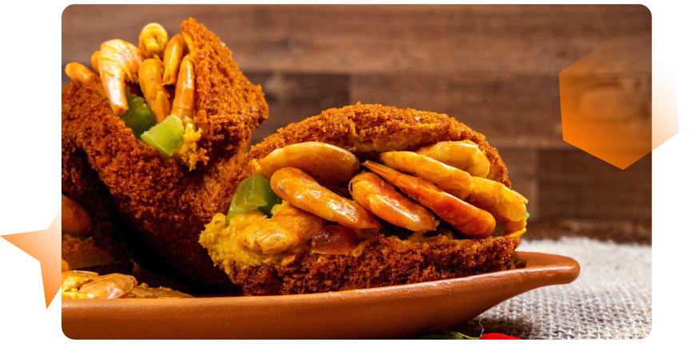

Refeições: forma de organização, negociação de reservas, orientações e procedimentos gerais
Ao acompanhar grupos em viagens, o guia de turismo precisa compreender a importância da alimentação para os turistas, afinal, alimentar-se faz parte das necessidades essenciais do indivíduo. Além disso, o momento da refeição pode ser uma experiência memorável, capaz de influenciar significativamente a satisfação do viajante.
Nesse sentido, alguns cuidados são fundamentais, como respeitar as preferências alimentares, oferecer opções variadas e valorizar a experiência gastronômica dos turistas que você estiver acompanhando. A experiência gastronômica como um todo é muito valorizada pelo turista atual. Mais que um bom atendimento, o local definido para a refeição deve ter um ambiente agradável, temático e a possibilidade de conhecer a culinária local; isso tudo torna este momento ainda mais especial.
Por isso, você, como guia de turismo, deve estar preparado para realizar com segurança os procedimentos de refeição, preparando-se antecipadamente para fornecer as informações necessárias sobre os hábitos alimentares da região e garantir a excelência dos serviços prestados, com atenção e dedicação durante esse momento tão importante. Neste conteúdo, você aprofundará seus conhecimentos sobre os procedimentos de refeição e entenderá a importância de estar atento às necessidades do seu grupo.

Ao observar o estudo de Maslow é possível perceber que a alimentação ocupa a base da pirâmide junto às demais necessidades fisiológicas. Isso demonstra a importância da alimentação para os indivíduos, não somente para sua sobrevivência, mas para seu bem-estar físico e emocional.
É importante compreender que, quando uma pessoa tem suas necessidades fisiológicas afetadas, ela pode ter reações adversas, capazes de comprometer sua capacidade de desempenhar atividades e sua satisfação pessoal. Por esse motivo, as refeições dentro de um roteiro devem ser minuciosamente planejadas e acompanhadas com muita atenção pelo guia de turismo. A escolha equivocada de um restaurante ou as más condução e orientação podem interferir no humor dos viajantes. A percepção do grupo não é só sobre a refeição, mas também sobre toda a experiência oferecida durante a viagem.
Imagine um passageiro que está com fome, com sono ou necessidade de ir ao banheiro. Ele será capaz de interagir e de prestar atenção nas informações? Ou, ainda, divertir-se como as demais? Provavelmente não. Isso demonstra como ter as necessidades básicas bem atendidas é fundamental para que se possa alcançar os outros níveis da pirâmide.
Logo, uma experiência gastronômica desempenha um importante papel nos âmbitos social e cultural, pois, por meio dela, o indivíduo pode manifestar suas preferências culturais, seja experimentando novos sabores, seja descobrindo ingredientes locais e conectando-se com a cultura de um lugar.
Além disso, a busca por realização pessoal e status social também está presente na escolha de um restaurante. Um exemplo disso é como as experiências exclusivas são bastante populares entre os viajantes. Almoçar em um restaurante renomado, comer em um local frequentado por celebridades ou que já foi cenário de filmes, conhecer restaurantes virais nas redes sociais, tudo isso agrega a experiência e dá um sabor especial à viagem.
Nesse contexto, como guia de turismo, você deve compreender todos os passos necessários antes, durante e após a refeição. Seu papel é assegurar que as refeições sejam satisfatórias, seguras e enriquecedoras, proporcionando não apenas o atendimento das necessidades básicas, mas também uma imersão cultural.
Formas de organização
As refeições configuram um momento de troca e interação social. Portanto, ao conduzir um roteiro, considere a refeição não só como um momento de atender às necessidades fisiológicas do grupo, mas também como uma pausa para o descanso e a convivência dele.
A alimentação pode ser organizada de diferentes formas. O tipo de refeição será escolhido pela agência no momento da estruturação do roteiro. Os aspectos que influenciam essas escolhas estão atrelados ao perfil do grupo, ao tempo disponível e às características do destino. Para realizar uma boa condução, identifique qual regime de alimentação está presente no roteiro, pois ele influenciará a escolha do restaurante e como você conduzirá o procedimento de refeição.
Refeição inclusa no pacote
Nessa modalidade, os serviços de refeição já foram reservados previamente pela agência e, em pacotes turísticos, podem estar inclusos na hospedagem ou serem reservados em restaurantes da localidade. Os principais serviços de refeição são divididos em:
Pensão com café da manhã
Essa categoria é a mais comum nos pacotes turísticos e inclui o café da manhã na hospedagem. As demais refeições são realizadas ao longo do roteiro, podendo estar incluídas ou não.
Meia pensão
Nessa categoria, estão incluídos no valor da diária do hotel o café da manhã e mais uma refeição, que pode ser o almoço e a janta, normalmente como bufê, no qual a bebida é paga separadamente.
Pensão completa
Nessa categoria, todas as refeições do pacote estão incluídas no hotel. São oferecidas as principais refeições: café da manhã, almoço e jantar, normalmente como bufê, em que a bebida é paga separadamente.
All inclusive
Esse tipo de serviço não é comum nos pacotes tradicionais, mas é comum em resorts e em alguns tipos de cruzeiros. Os serviços all inclusive, além de oferecerem todas as refeições principais, como café da manhã, almoço e janta, também permite o consumo de bebidas sem restrições, tudo já incluído no valor do pacote.
Refeição não inclusa e escolhida pelo guia de turismo
Em alguns roteiros, a agência de turismo deixa a escolha do local de almoço ou jantar a critério do guia de turismo. Porém, esse é um momento delicado do roteiro, pois você terá que administrar as expectativas dos turistas.
Para garantir que o momento da refeição satisfaça os viajantes, além da qualidade da alimentação é fundamental um bom atendimento que atenda às necessidades do grupo. Para que esse objetivo seja alcançado, é indispensável realizar reservas, negociar valores antecipadamente e considerar fatores essenciais na escolha do estabelecimento. Entre esses fatores estão:

Tempo disponível: revise seu roteiro previamente e estime quanto tempo haverá para a refeição. Essa informação é valiosa para escolher o restaurante ou para reorganizar o roteiro, se necessário.
Localização: para escolher um restaurante, verifique se a localização se encaixa no roteiro. Priorize os restaurantes próximos a atrativos que estejam na sequência lógica do roteiro, evitando deslocamentos longos e perda de tempo.


Perfil do grupo: avaliar o perfil do grupo é importante para evitar descontentamentos. Poder aquisitivo, faixa etária, perfil do viajante, entre outros fatores, podem influenciar na escolha alimentar.
Estrutura: avalie se a estrutura disponível atende à necessidade do grupo. Verifique se há estacionamento para o veículo e banheiros suficientes para o número de pessoas, assim como o tamanho do espaço e a quantidade de mesas disponíveis.


Tipos de serviço: a escolha do tipo de serviço é influenciada pelo regime de alimentação do roteiro, o perfil do grupo e as opções disponíveis na localidade. Você conduzirá o procedimento de refeição de acordo com o tipo de serviço escolhido.
Costuma ser especializado em um tipo de culinária (massas, churrasco, pizzas, fondue etc.) e é um serviço rápido a preço único. Ao escolher essa opção, avalie se atende à necessidade de todos, pois esse tipo de serviço pode ter poucas opções para pessoas com restrições alimentares.
O serviço de bufê, ou buffet, é uma boa alternativa para todos os tipos de grupo, pois apresenta opções de proteínas e uma variedade de acompanhamentos, normalmente como sobremesas incluídas. Atualmente, há uma ampla oferta de opções para pessoas vegetarianas e com restrições alimentares.
Esse serviço é comum em restaurantes tradicionais, temáticos e especializados, que apresentam pratos mais elaborados. Também, é comum em restaurantes populares de comida regional, que servem “pratos feitos” a baixo custo. Porém, fique atento! Esse tipo de serviço pode ser mais demorado, além do fato de as pessoas levarem mais tempo para escolher seu prato. Por isso, o serviço à la carte acaba gerando atrasos, então, com grupos grandes, reserve um tempo maior para a refeição.
Como guia, você pode negociar previamente um valor promocional para pratos regionais ou para pratos com acompanhamentos e proteínas à escolha do cliente. Isso pode facilitar a escolha para o turista e agilizar a produção dos pratos.
Costuma ser especializado em um tipo de culinária (massas, churrasco, pizzas, fondue etc.) e é um serviço rápido a preço único. Ao escolher essa opção, avalie se atende à necessidade de todos, pois esse tipo de serviço pode ter poucas opções para pessoas com restrições alimentares.
O serviço de bufê, ou buffet, é uma boa alternativa para todos os tipos de grupo, pois apresenta opções de proteínas e uma variedade de acompanhamentos, normalmente como sobremesas incluídas. Atualmente, há uma ampla oferta de opções para pessoas vegetarianas e com restrições alimentares.
Esse serviço é comum em restaurantes tradicionais, temáticos e especializados, que apresentam pratos mais elaborados. Também, é comum em restaurantes populares de comida regional, que servem “pratos feitos” a baixo custo. Porém, fique atento! Esse tipo de serviço pode ser mais demorado, além do fato de as pessoas levarem mais tempo para escolher seu prato. Por isso, o serviço à la carte acaba gerando atrasos, então, com grupos grandes, reserve um tempo maior para a refeição.
Como guia, você pode negociar previamente um valor promocional para pratos regionais ou para pratos com acompanhamentos e proteínas à escolha do cliente. Isso pode facilitar a escolha para o turista e agilizar a produção dos pratos.
Refeição não inclusa e escolhida pelos passageiros
Alguns roteiros nos quais a refeição não está incluída reservam um período destinado para alimentação, que fica à livre escolha do turista. Da mesma forma, como guia, você deve auxiliar o grupo na escolha, indicando opções adequadas ao perfil dele.
Nessas situações, praças de alimentação, centros gastronômicos ou uma rua que concentre variedade de restaurantes são boas alternativas para atender múltiplas necessidades.
Embora pareça simples, esse é um momento no qual o grupo se dispersa e pode causar alguns transtornos, como atrasos, pois o tempo de atendimento é diferente em cada restaurante. Portanto, dê dicas de locais com atendimento rápido e qualidade na refeição. Também, reforce ao grupo o local e o ponto de encontro.
O home service pode ser uma boa opção para os turistas que optem por não sair do hotel para jantar. Nessa modalidade, o hotel conta com um cardápio à la carte, que, quando solicitado, a refeição é servida no quarto. É importante ressaltar ao grupo o horário de funcionamento da cozinha e que os valores do serviço serão adicionados à conta para pagamento no check-out.
Alimentação e programação de atividades previstas no roteiro
É necessário organizar as alimentações dentro de um roteiro turístico e alinhadas à programação. Após as refeições, é preciso optar por atividades mais tranquilas. Depois de uma alimentação mais pesada, deve-se evitar exposição ao sol e atividades que exijam esforço físico ou muita agitação por parte dos participantes. Passeios de barco, trilhas, parques de diversão devem ser incluídos cerca de duas a três horas após as refeições completas, ou no período da manhã, respeitando um tempo de 30 minutos a uma hora após o café da manhã.
Negociação de reservas, orientações e procedimento gerais
O guia de turismo é a peça-chave para que o roteiro aconteça conforme foi estruturado. Assim, você deverá executar uma série de procedimentos, tendo todo o cuidado necessário para que o grupo tenha uma refeição com qualidade e excelência no atendimento. Os cuidados necessários precedem o momento da refeição em si, começando já na reserva do restaurante.
No primeiro contato, o responsável pela reserva deve passar todas as informações pertinentes, como data, horário e número de pessoas. Além disso, é necessário ter um cuidado especial com os viajantes que possam ter algum tipo de restrição alimentar, o que deve ser informado no momento da contratação do pacote. Se houver algum participante com restrições, verifique se o cardápio do restaurante atende às necessidades dele ou se é possível que o estabelecimento faça algo à parte. Caso nenhuma das duas alternativas seja possível, o guia de turismo deve sugerir outros restaurantes nas proximidades de onde o grupo estará.
Na véspera do atendimento, é importante realizar contato para confirmar a reserva e as condições acordadas, como valores, formas de pagamento e cortesias para o guia de turismo e motoristas.
Durante a execução do roteiro, quando estiverem a caminho do restaurante, o guia deve realizar seu speech de orientação ao grupo com as informações sobre o almoço. O profissional deve ter um cuidado especial em apresentar o cardápio, indicando pratos típicos e ou especialidades da casa e curiosidades na forma de preparo. Também é válido sugerir as opções para as pessoas com restrições alimentares e ter atenção aos alimentos que são potencialmente alergênicos, como leite de vaca, soja, amendoim, ovo, castanhas, trigo, peixe e frutos.
Enquanto viaja, uma pessoa muda sua rotina alimentar e isso também pode gerar reações. Dessa forma, alerte o grupo sobre ingredientes peculiares, como tucupi e jambu, por exemplo, típicos da região amazônica; ou, ainda, sobre pratos muito apimentados, como acarajé, caruru e moqueca, no nordeste, entre tantos outros presentes na rica culinária brasileira.
Durante a refeição, é sempre importante estar atento e disponível ao grupo. Verifique se todos realizaram seus pedidos ou se necessitam de ajuda. Certifique-se de que todos foram servidos. Para evitar atrasos, observe o grupo. Quinze minutos antes do horário da saída, aproxime-se dos que já terminaram a refeição e indique que se dirijam ao caixa, para evitar longas filas.
Em alguns casos, o guia deve realizar o pagamento da refeição com o valor repassado pela agência, então realize o pagamento e guarde o recibo. O mesmo deve ser feito para situações nas quais você pague sua refeição e necessite solicitar o reembolso. Verifique se todos os passageiros já deixaram o local. Agradeça e despeça-se do fornecedor.
Cancelamentos, atrasos e outros imprevistos
Para aprofundar seus conhecimentos sobre o tema e fazê-lo refletir sobre gastronomia e cultura, ouça o podcast a seguir.
Clique ou toque no botão de play para ouvir o podcast ou no botão de transcrição para ler o conteúdo.
Ouça o podcast a seguir.
Encerramento
Neste conteúdo, você percebeu que a alimentação vai além das necessidades básicas, pois está associada a outros aspectos da vida humana, como a cultura, a socialização e a realização pessoal. Ao entender essa relação, é possível oferecer aos turistas mais que uma simples refeição, e sim uma experiência gastronômica única.
Ao explorar a importância do guia de turismo, note que seu papel supera a mera condução de grupos e a indicação de restaurantes. Você, como guia, é o anfitrião, que tem a função de criar um ambiente acolhedor e descontraído, garantir a segurança alimentar e atender às necessidades de cada viajante.
Como capacidade crítica, gestão do tempo, flexibilidade para lidar com imprevistos e empatia para gerenciar as expectativas do grupo, o guia garante que a refeição seja uma experiência satisfatória.
Desse modo, você exerce um papel crucial para a excelência do serviço, à medida que representa o elo entre o viajante e os serviços ofertados pelo destino. Além disso, ao valorizar as tradições culinárias da região, você enriquece a experiência, tornando-a mais autêntica.